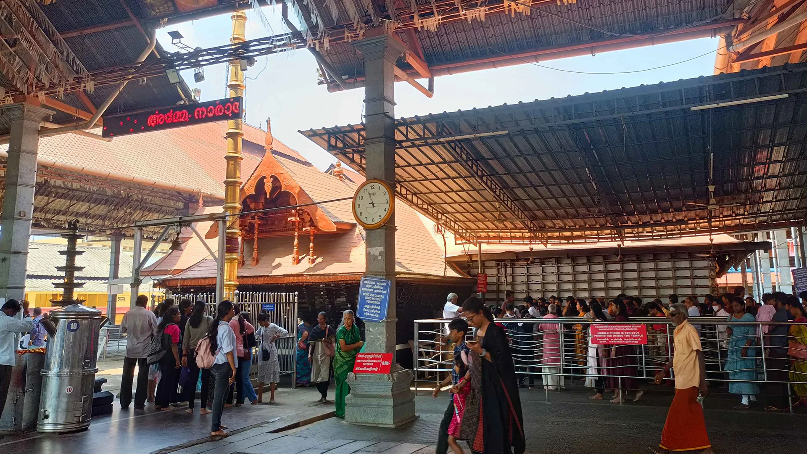
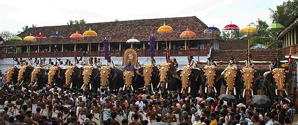
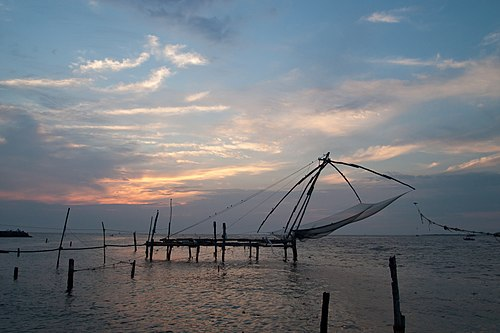
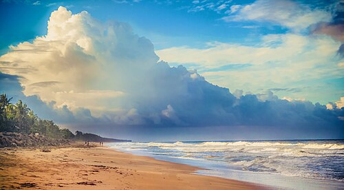

Chottanikkara Temples
The Chottanikkara (correction of Jyotiannakkara) Sri Bhagavathy Temple is a temple dedicated to the Hindu supreme mother god. Chottanikkara Bhagavathy. She is believed to be residing in Chottanikkara (Mahalakshmi) along with her Husband Mahavishnu. The main deity is also considered as Lakshmi Narayana according to the temple legend. The temple is classified one among the 108 Abhimana Kshethram of Vaishnavate tradition. The temple is located at Chottanikkara, a southern suburb of the city of Kochi in Ernakulam district, in the state of Kerala, India and is one of the most popular temples in the stateThe temple also houses a separate shrine for Bhadrakali..
Hill Palace Museum
Hill Palace is an archaeological museum and palace located in Tripunithura . It is the largest archeological museum in the state and was the imperial administrative office and official residence of the Cochin Maharaja. Built in 1865, the palace built in the traditional architectural style. The complex has an archaeological museum, a heritage museum, a deer park, a pre-historic park and a children's park.The campus section of the museum is home to several rare species of medicinal plants.The Centre for Heritage Studies (CHS), an autonomous research and training institute set up by the Department of Cultural Affairs, of the Government of Kerala also functions at the site.
Sree Poornathrayesa temple
Sree Poornathrayesa temple (in Malayalam: ശ്രീ പൂര്ണ്ണത്രയീശ ക്ഷേത്രം) is a Hindu temple situated in Thrippunithura, Kochi, the capital of the former Kingdom of Cochin. The temple is considered among the greatest temples in Kerala and was the first among eight royal temples of the erstwhile Kingdom of Cochin. The presiding deity is Vishnu as Santhanagopala Murthy or Poornathrayeesa. He was the national deity of Cochin and protector guardian of Tripunithura ,more than 40 elephants participate in his Vrishchikotsavam.It is an eight-day-long festival known for its grandeur of festivities and cultural programmes like Melam (percussion), Kathakali, and music concerts.
Marin Drive
Marine Drive, officially the APJ Abdul Kalam Marg,[2] is a promenade in Kochi, India.[3] It is built facing the backwaters. With several shopping malls it is as an important centre of shopping activity in Kochi.The walkway starts from the Kerala High Court junction and continues until the Rajendra Maidan. There are also several boat jetties along the walkway.[5] The walkway has three bridges: the Rainbow bridge, the Chinese Fishing Net Bridge and the House Boat Bridge.But the name Marine Drive, since the initiation of the project in the 1980s, identifies the whole region (which was claimed from the lake), and not just the walkway.
Fort Kochi & Mattancherry
Fort Kochi, named for the first Portuguese fort in India, is a historic area known for its colonial architecture and Chinese fishing nets, while Mattancherry is a nearby historic ward famous for the Mattancherry Palace (Dutch Palace) with its Kerala murals, and is also a centre for the Cochin Jewish community. Both are popular tourist destinations within the larger Kochi area, showcasing a rich history of trade, colonial influence, and diverse cultures.Fort Kochi is rich in heritage and culture, and is a prominent tourist destination for both domestic and international travellers- being ranked as ninth among the top 25 in National Geographic’s Top Tourist Destinations To Explore In 2020.